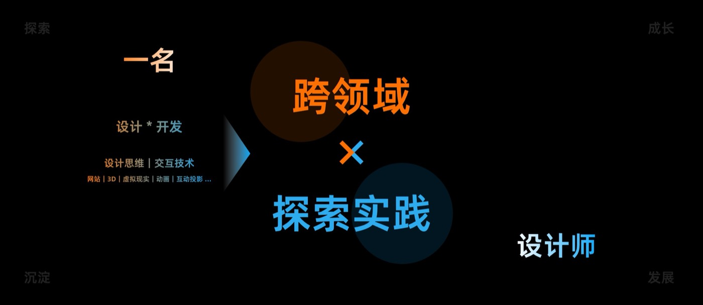
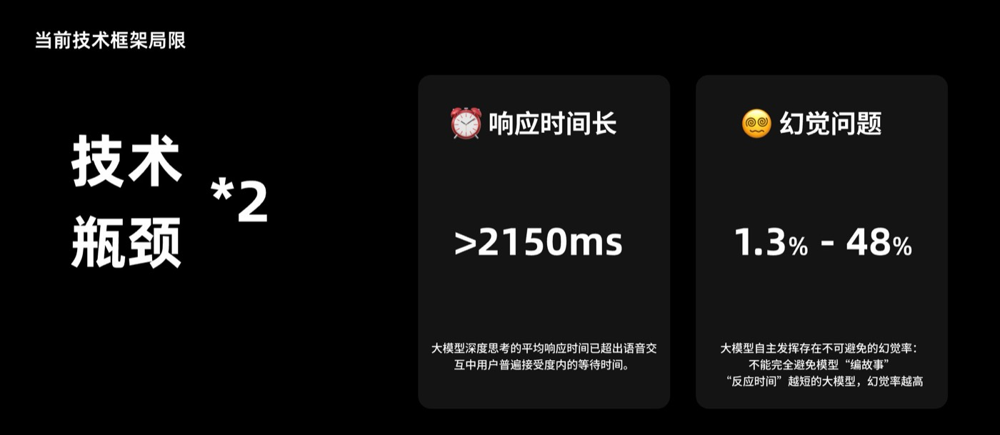
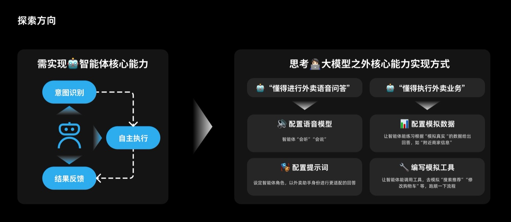
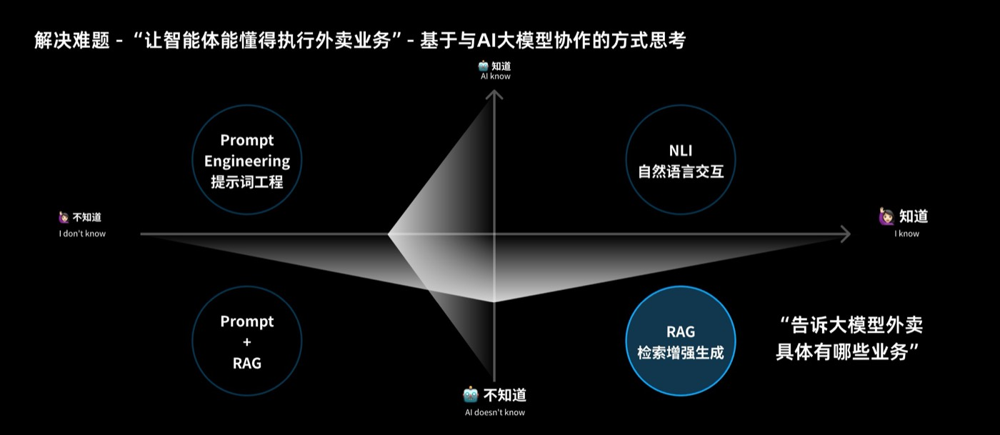

2025 年 5 月到 9 月，我在淘宝闪购（原「饿了么」）的C 端体验设计团队，负责天猫精灵智能点外卖项目的语音交互方向——对着智能音箱说句话就把外卖点了，全程没有屏幕。交给我的问题不是「做一个语音功能」，而是更难的那个：纯语音交易到底能不能成立？如果不能，缺的究竟是哪一项能力？已上线的智能体给出的答案倾向于「不能」：它被锁在「固定任务流 + 模板化回复」里，对不上脚本的请求直接失败，回复读起来像一份套话。而这救不了——限制是架构性的，不是措辞性的。为了找到真正的天花板而不是凭空猜测，我亲手搭了一个能跑通完整点餐闭环的 MVP（基于真实大模型），再用它把「技术接下来必须长出什么」从观点推向证据。这段实习最终的产出不是一份设计批评，而是一份由设计牵头的技术路线图：三条体验准则，各自对应一个工程方向与一个可执行的首个动作。我自己的角色边界也随之移动——大约四分之三做设计，四分之一动手工程。
00我做了什么，为什么做
职责范围、关键发现，以及它最后变成了什么淘宝闪购（原「饿了么」）正在建设面向纯语音场景的 Agent 能力：对着天猫精灵智能音箱说句话，外卖就点好了，全程没有屏幕。演示很有说服力，线上体验却总在同一个地方塌——对不上预设流程的请求得不到服务，回复又像一份套话。两个症状的根是同一个：智能体不被允许自由推理，因为自由推理既慢、又偶尔会编。我要回答的是：这个天花板究竟是设计问题还是技术问题——整个实习就是围绕这一问展开的。
| 工作线 | 我做了什么 | 为什么值得做 |
|---|---|---|
| 语音点餐智能体 | 先诊断线上失败，再基于一个开源语音助手项目与真实大模型搭出 MVP，端到端跑通搜索 → 加购修改 → 提单下单 → 购后。 | 验证纯语音点餐到底能不能成立，并定位技术究竟停在哪一步。 |
| AI 搜索入口 | 把 AI 入口前移到搜索建议列表里，让用户在敲定查询词之前就看见它。 | 一个没人看见的 AI 能力等于不存在——可达性决定这个功能是否真的存在。 |
| AI 生成筛选项 | 搭了一条生成链路——采集维度 → 用户画像 → 角色提示词 → 结构化输出——产出个性化筛选项文案，以试点形式交付。 | 品类标签对单个用户太粗、不产生意义；要验证的是「与我相关」才值得点。 |
| 常规交互设计 | C 端产品的常规产品与交互设计工作。 | 让 AI 方向的探索始终锚定在它最终要落进去的产品里。 |
- 我把限制当设计命题，而不是障碍。智能体的体验限制是架构性的——固定任务流加模板化回复——所以更好的文案救不了它，修复必须发生在技术层面。这意味着，值得设计师自己动手去搭建，并了解相关技术链路。
- 我动手是为了搞清楚问题，不是为了交付。MVP 的职责是让技术真实的边界变得可见，使路线图能建立在证据而不是观点之上。它的价值在于让团队学到了什么，而不在于它替代了什么。
- 我推开了自己的角色边界。约四分之三的时间在做设计，其余用于配置语音模型与提示词、搭建模拟数据与工具脚本、自己写通接口逻辑。
- 设计原则没有被技术吞掉。自然语言的多样性、对模糊意图的容忍、自主完成多步任务——这三条成了技术路线图要对齐的标准，也就是由设计来给工程出题。
| 形式 | 设计实习 —— AI 智能体体验设计 |
| 公司 | 淘宝闪购（原「饿了么」）—— 体验设计团队 |
| 项目 | 天猫精灵智能点外卖 —— 语音交互方向 |
| 时间 | 2025.05 – 2025.09 |
| 背景 | C 端体验设计团队 · APP 平台与用户增长 |
| 命题 | 判断纯语音点餐能否成立；若不成立，明确缺的是哪一项能力 |
| 范围 | 语音点餐智能体 MVP（天猫精灵）· AI 搜索入口 · AI 生成筛选项内容 · 常规交互设计 |
| 方法 | 提示词工程 · 检索增强生成（RAG）· 语音模型配置 · 模拟数据与工具脚本 · 可用性推理 |
| 产出 | 可运行的语音点餐 MVP · 设计牵头的技术路线图 · AI 编程工具研究 · AI 生成筛选项试点 |
| 关于脱敏 | 内部数据已刻意隐去；文中数字描述的是我搭建的原型，而非生产系统。 |

01亲历这个约束
学科：问题定义 & 技术理解力先把目标架构说清楚，因为后面的一切都是对它的回应。用户对着天猫精灵智能音箱说话；音箱把语音转成文字；智能体识别意图；大语言模型进行推理；然后一组平台工具去执行——搜索商品、推荐商品、修改购物车、确认订单、完成支付。用户听到结果被读回来。纸面上，这是一个完整的对话式交易闭环。

响应时间长
大模型的深度推理耗时，超过人在对话里愿意等待的长度。电话里的沉默像断线；音箱的沉默则像是坏了。
幻觉问题
被赋予自主性的模型有时会编造。反应时间越短，编得越多——两个局限互相拉扯，而不是干净地此消彼长。

02体验到底坏在哪
学科：可用性诊断线上，这两项局限被两种应对方式吸收掉了——固定任务流与模板化回复。两者都是合理的工程选择，但两者也都把技术限制转译成了用户可见的失败，而且这些失败具体到可以命名。
模糊指令难达成
「再给我加一杯另外那个」无法被固定流程执行，因为流程里没有一步能解析「另外那个」。用户只能和一个握不住指代的系统反复协商。
功能覆盖不全
预设步骤之外的能力不是被拒绝，而只是不存在。用户分不清「你们不做」和「你没被做出来」。
回复语言较机械
模板化回复正确却没有生命。在纯语音产品里，措辞就是全部界面，所以机械的措辞会被直接读成「不聪明」。

产品正在用可控性直接换取智能感。两者都是真实需求——一个听错就下单的智能体，比一个反问一句的智能体更糟。但这个取舍是被架构默认做掉的，而不是被选择的。把它命名成一次取舍，是我做的第一件有用的事：取舍可以被移动，而架构可以被商榷。

03打破僵局
学科：原型搭建 & 系统配置当下的技术瓶颈，是否意味着我们就做不出好的产品体验？我不认为答案是否定的——更重要的是，我认为这件事靠争论解决不了。它只能靠把东西做出来、看它究竟在哪里断掉来解决。

选型是刻意的。我需要一个真正可语音交互的东西——一个本来就听得见、说得出的项目，让「对话」本身就是媒介，而不是对对话的模拟；同时它必须开源，这样关键部件才能被重新配置，而不只是被使用。此后每一步，都是关于「这段体验不能缺哪些能力」的设计判断。


让它执行，和让它说话是两回事。这里有用的框架是一个象限：模型是否懂这个业务领域，以及是否知道具体事实？提示词工程解决的是模型已经理解的部分；而它不理解的，答案不是写更多提示词，而是检索增强生成——给它材料，而不是给它指令。



04把 Demo 变成路线图
学科：体验准则 → 技术方案Demo 本身不是交付物，它的价值在于它支撑的论证。既然已经证明核心旅程能跑通，我就把它翻过来，去问这段体验对技术提出了什么要求——然后把这些要求写成准则而不是偏好，这样工程可以被它约束，设计也要对它负责。

05重新定义设计角色
学科：协作模式 & 职业边界最有迁移价值的收获与智能体无关，而是关于：当产品的核心难点是技术性的，设计这个职能会发生什么。在传统模式里，设计夹在产品与工程之间，交出一份规格说明。而在这次工作中，设计必须拉动工程，而不是交付给工程——因为桌面上这个问题（体验应该对模型提出什么要求）只有同时握着体验意图、又具备足够技术素养去争辩可行性的人，才答得出来。
从被动响应到主动探索
从被动接受一份需求，转向主动把问题打开。任务不是「把这个流程设计出来」，而是「这个流程跑不通，去找出为什么」。
技术必须证明产品价值
把技术工作当作手段：一项能力凭它为用户打开了什么而立身，而不是凭它有多亮眼。这与一项设计决策要过的检验是同一个。

06一边倡导、一边自己用
学科：AI 辅助实践主张设计师应当与 AI 协作，只有落到自己的活儿上才算数。我做了一个小研究，从非开发者的视角对比两款 AI 编程工具——读代码、建项目、改动、跑起来——并访谈了三位专业开发者，用来校正我自己的判断里哪些是天真的。有用的结论不是一个孰优孰劣的判决，而是一个工作闭环：AI 解释代码让我学，我提供规范让 AI 学。

同一种本能也用在了第二条工作线上。产品原有的筛选项颗粒度太粗，对个人用户几乎不构成意义，所以我没有凭手感去编更好的词，而是搭了一条生成管线：先定义要采集哪些维度，再拼出用户画像，再在提示词里定义模型的角色，最后把结构化输出作为候选筛选项。

设计依据不是「个性化是好事」，而是一个观察：让一个筛选项有吸引力的是「自我相关性」——一个说出你所处境况的类目，比一个只说出某种食物的类目更容易换来一次点击。这是一个关于注意力的、可被检验的论断，也正因如此，这件事的终点是试点而不是结论。

07我的收获
反思- 限制是设计材料，不是障碍。智能体的局限恰恰是它最有意思的地方；把它当作一份需求（而不是一句抱怨）来处理，才产出了这段实习唯一有分量的东西。
- 先把问题搭出来，再回答它。MVP 的存在不是为了上线，而是为了让关于技术的争论有可被演示的东西作为地基。
- 当设计握有准则时，它可以引领技术工作。把体验要求写成准则而非偏好，是让设计在路线图上有发言权的原因。
- 说清自己原型的边界。写明 MVP 做不到什么（没有真实商家系统、没有支付、没有数据层），是它显得可信而非吹嘘的原因。
- AI 是工作方法，不是话题。最有价值的 AI 工作，是把 AI 用在自己的流程上——对比工具、从生成的代码里学、搭建生成管线——而不只是设计 AI 功能。